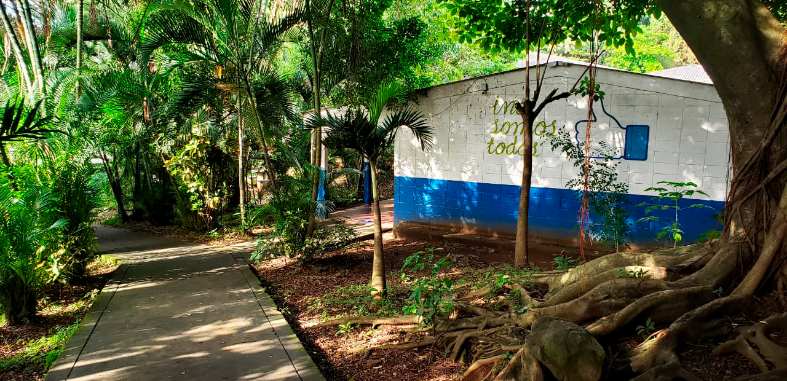

Noticias recientes
Inscripcion Nuevo ingreso
Lunes 18 y martes 19 de octubre se realizara la inscripcion de aspirantes a nuevo ingreso 2022 con horarios por la mañana de 8:00 am a 11:00 y por la tarde de 1:00 a 3:00 pm. No se necesitara presentar ningun tipo de documento.
